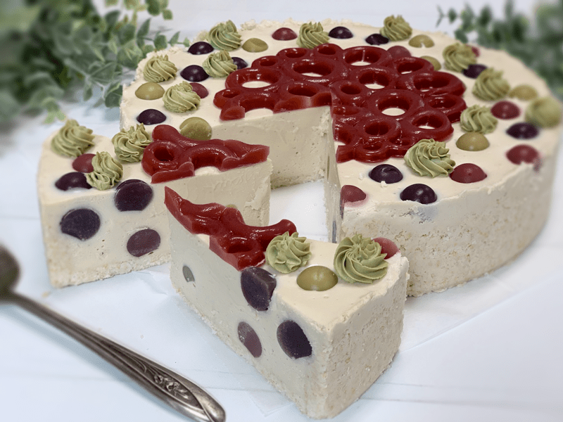

Summertime and polka dots go hand in hand, well they do in my book. I love it when foods take me on a stroll down memory lane, don’t you? Want to take a walk with me? Great, let’s go… You see, as a wee little one, I would spend my summers with my Great Grandparents, and one of her many talents was as a seamstress. First and foremost she was the Queen of Mac n’ Cheese! I have touched on this before in other posts but not sure I talked about my beloved polka dots!

Do you remember those crop tube tops from the ’70s that had elastic necklines as well as around the bottom and arm cuffs? They usually had a single layer ruffle that wrapped around the chest. I was searching the net to find a picture of one, and they referred to them as vintage clothing. Say what?! I am not vintage, am I?! *shudders, gasps, the shock-the horror-the giggles.*
As the summer days approached, I would grow more and more excited about my trips to my Great Grandparents house. There were consistent staples when I stayed with them; homemade mac and cheese, mud pies, playing in the rain, sewing, baking, grapes, and swimming. Upon my arrival, one of our Must-Do’s was to hit the fabric store so I could pick out some fabric for clothing that she had planned on making for me. For some reason, I always selected a polka-dotted print. Throughout my days with her, I would locate Great Grandma by the hum of the sewing machine emanating from the basement. I would find her four-foot-eight inch frame hunched over the sewing machine, the needle moving at light-speed, polka-dots blurring before my eyes. It wasn’t very long before Grandma would shoosh me outside to play in the mud so she could concentrate on her sewing.
As I slipped my newly-made creation on I would flounce around in my fluffy dotted tube top, blonde pigtails springing into full action, cheeks puffed up with a mouth full of grapes that sparkled with a blanket of freckles as the sun bent down to kiss me. Aaah, life was good. I wish I had a picture of me in one of those outfits to share with you, but unfortunately, I don’t have many photos of me as a child. Hopefully, I helped you get an image in your head. Anyway, all that is to say that every time I see polka dots, I think of my childhood, summer, and Great Grandma. Such warm and loving memories. That my friends is what prompted my little cheesecake creation here, with that said, let’s talk about how I made this summertime dessert.
Molds for Polka Dots and Top Decoration
When it comes to making the polka dots and the topper, you can use any mold you can find. Unfortunately, I couldn’t find the topper mold that I used for this cheesecake online anymore. Though, this (one) is similar. As far as the polka dots go, I had a mold for making round ice cube trays. I have no clue where it came from, but this one is close to what mine is like, Polka Dot Mold.
You can get creative with whatever mold you decide to use, just make sure that you have them ready to go before you start making the polka dot agar mixture because as it cools, it starts to firm up. If this happens to you, simply reheat to melt it again. It’s also best to place the silicone molds on a baking sheet for transferring. If you don’t, they will flop and spill. Once again, I learned these lessons for you. Make these days in advance if you want but don’t freeze them, they don’t hold up so well. I tested it out for you so I could let know.
This cheesecake has the most amazing creamy texture with fun pops of polka dots in each bite! Kids, young adults, or vintage peeps like me will thoroughly enjoy the childlikeness of it, so I encourage you to give the recipe a try. Please be sure to leave a comment below and have a wonderfully blessed day. amie sue